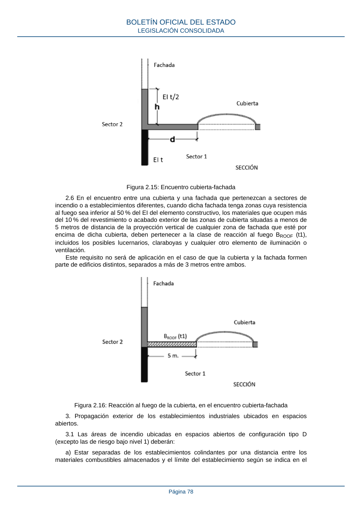

RSCIEI · Página 78 · versión 2025-04-10
SHA256: 85aa0af25d51e5b58d8975a4eefbf76d3f57a8933445cfe814ae9c4818a2e3e7 · página física 78 de 108 · métodos de encabezado
solo si están cotejados.
Formatos: Markdown · JSON de bloques · PDF p. 78 · imagen PNG
Figura 2.15: Encuentro cubierta-fachada 2.6 En el encuentro entre una cubierta y una fachada que pertenezcan a sectores de incendio o a establecimientos diferentes, cuando dicha fachada tenga zonas cuya resistencia al fuego sea inferior al 50 % del EI del elemento constructivo, los materiales que ocupen más del 10 % del revestimiento o acabado exterior de las zonas de cubierta situadas a menos de 5 metros de distancia de la proyección vertical de cualquier zona de fachada que esté por encima de dicha cubierta, deben pertenecer a la clase de reacción al fuego BROOF (t1), incluidos los posibles lucernarios, claraboyas y cualquier otro elemento de iluminación o ventilación. Este requisito no será de aplicación en el caso de que la cubierta y la fachada formen parte de edificios distintos, separados a más de 3 metros entre ambos. Figura 2.16: Reacción al fuego de la cubierta, en el encuentro cubierta-fachada 3. Propagación exterior de los establecimientos industriales ubicados en espacios abiertos. 3.1 Las áreas de incendio ubicadas en espacios abiertos de configuración tipo D (excepto las de riesgo bajo nivel 1) deberán: a) Estar separadas de los establecimientos colindantes por una distancia entre los materiales combustibles almacenados y el límite del establecimiento según se indica en el BOLETÍN OFICIAL DEL ESTADO LEGISLACIÓN CONSOLIDADA Página 78
